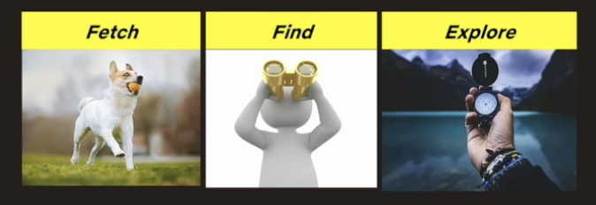
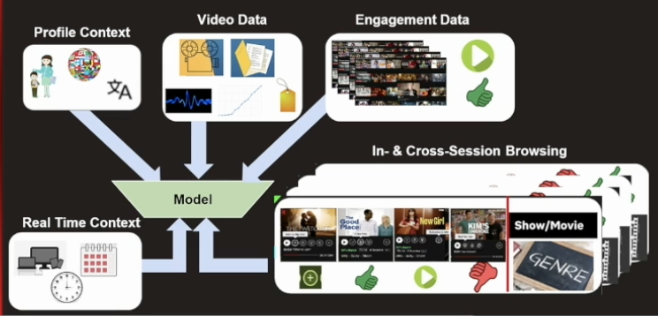
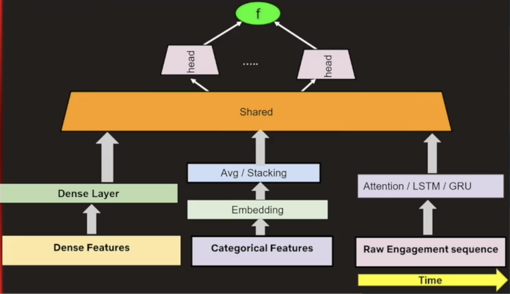
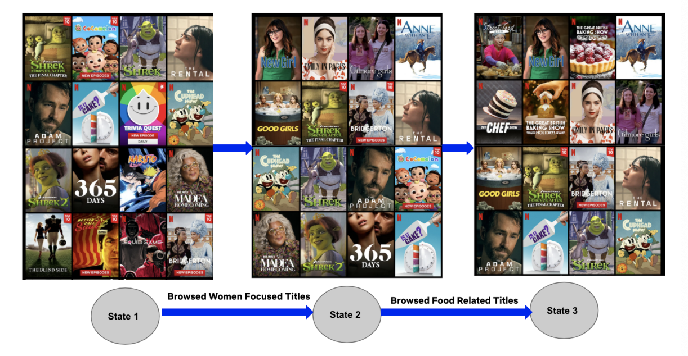
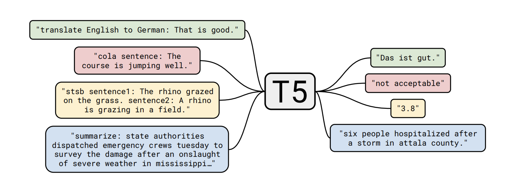
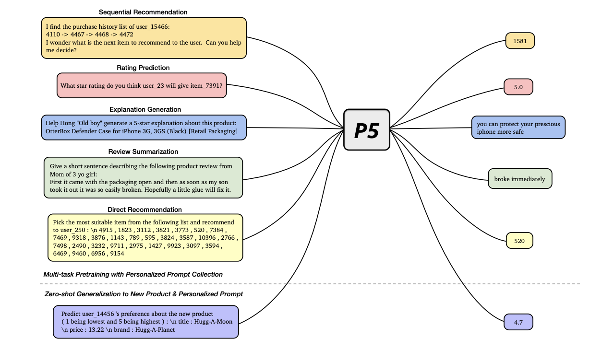
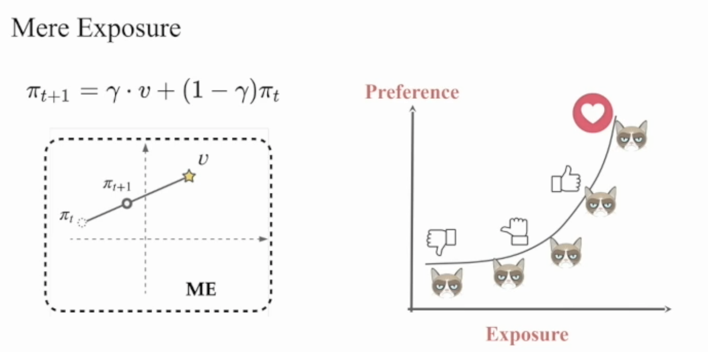
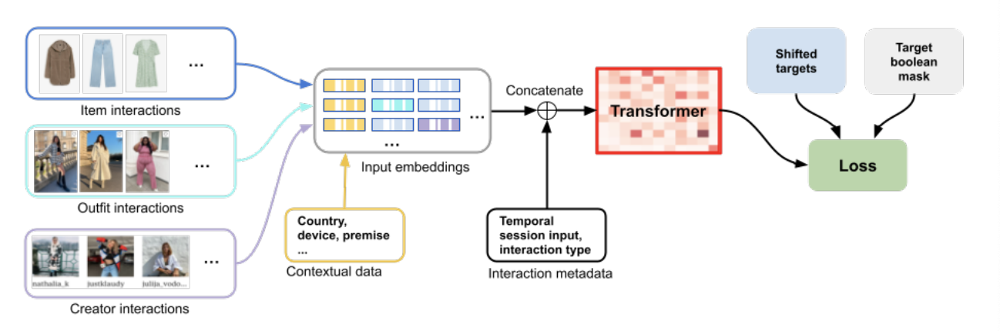
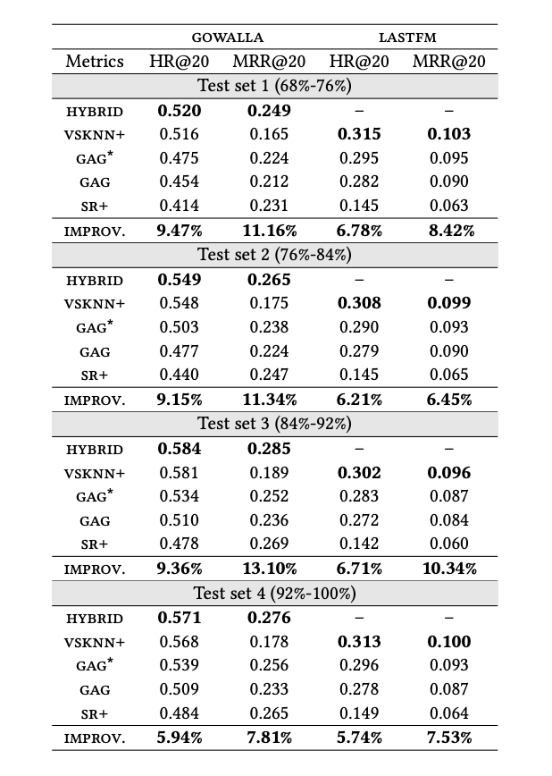

After reading papers from RecSys for several years, I was really happy to be able to (virtually) attend for the first time this year. If you haven’t heard of it, RecSys is the most important conference for new results in the field of recommender systems research.
This was also my first academic conference of any kind! I found the mix of academic and industry talks really balanced each other out well - it was great to see exciting theory-driven ideas alongside real world implementation stories, with all the engineering problems that come with them.
Below are the papers I found most interesting from the main conference, in no particular order. Links to the papers PDFs are included in the sub-titles.
Augmenting Netflix Search with In-Session Adapted Recommendations

Based on user research, Netflix found that users typically fall into 3 categories when searching for content: * Fetch - the user knows exactly what they want, and generally enter a query for an exact film or TV show * Find - the user broadly knows the kind of thing they want to see, but it’s not a fully formed idea - eg. comedy movies * Explore - the user has no fixed idea of what they are looking for, and are open to suggestions
Based on this, Netflix reasoned that there was an opportunity to present the “Explore” users with recommendations on the pre-search page. The key point is that these recommendations would need to take into account user interactions from the current session, to align with whatever they might be looking for at the current moment. These kind of recommendations are commonly referred to as “Anticipatory Search” or “Pre-search Recommendations”.
The authors designed a model to provide recommendations for this use case. This model uses features such as historical user data, context about the user and the session, and well as raw sequences of in-session browsing interactions. Video metadata and embeddings are also used to provide information about the items that are interacted with.

The authors experimented with different types of deep architectures, including both dense and sparse features. This was coupled with the raw interaction sequence, which they modelled with different types of neural network modules that can accommodate sequence data - attention blocks, LSTM and GRU.

They pick out a specific example of how the model reacts to in-session browsing activity. The ranking of the recommendations is influenced by the titles browsed by the user, which they contend should result in a good experience for the user when they navigate to the search page.

No specifics are mentioned regarding which objectives are used to train the model, or how the model performs when tested online. In offline performance they see a 6% relative increase in ranking metrics against the current production model. I would be interested in hearing more about the cost-benefit tradeoff involved in deploying this model online, due to the large engineering challenge required to make real-time features available to the model at inference time.
Recommendation as Language Processing (RLP): A Unified Pretrain, Personalized Prompt & Predict Paradigm (P5)
This paper borrows heavily from recent advances in NLP models to create a multi-purpose model for different recommendation tasks.

P5 is directly inspired by the influential T5 paper. T5 applies a unified approach to transfer learning, to effectively learn multiple tasks as part of a text-to-text framework. P5 applies these concepts to recommendation tasks, as shown below.

The P5 framework allows for the use of prompt templates, which are filled with user interaction data and item metadata, to produce a fully text-based input based on the task described in the prompt. This means that all tasks can be learned simultaneously during pre-training. The authors present very promising results for this architecture compared to other state of the art models. If they can be replicated, this could lead to the use of more multi-purpose, pre-trained models in industry. I for one, look forward to becoming a rockstar prompt engineer! 🚀
Towards Psychologically-Grounded Dynamic Preference Models
One of the core assumptions in many recommender models is that user preferences are static. But what if a user’s preferences change due to the items we are showing the user with our recommender system? How could this feedback loop effect what a user wants over time? This paper focuses on a framework for formalising possible user preference changes due to human psychological effects.
The best example included is the “Mere Exposure Effect” - which states that people are more likely to develop a preference for something that they are familiar with. This was first described by Robert Zajonc in the 60s - his experiment included nonsense words on the cover of a student newspaper. When tested, on average the students who read this paper rated the words they had been exposed to as more positive-sounding compared to other nonsense words.
How better to explain this all, than a graph with a grumpy cat? 😻

The authors formalise the mere exposure effect applied to recommendations mathematically, as show on the left. A user’s initial preferences (πₜ) and items (ν) are both represented as vectors. In response to being recommended an item ν at time step t+1, the users preference moves from their starting preference vector, along the line the intersects the user’s baseline preference and the item vectors. This results in the updated preference vector, πₜ₊₁. The factor γ controls how far along this line the preferences move (where γ ϵ [0, 1]). The graph below the equation depicts this in a 2-dimensional preference space.
The authors propose similar formulations for Operant Conditioning and Hedonic Adaptation, before including a section on simulations based on these ideas. This includes discussion on how recommenders may achieve different engagement scores in the case where user preferences are dynamic.
The ideas in this paper feel some way from making it into most industrial settings anytime soon - but a more holistic focus on the role platforms might be playing in moulding user preferences is definitely welcome.
Reusable Self-Attention Recommender Systems in Fashion Industry Applications
Continuing the trend of unifying models - here engineers at the fashion website Zalando present their work on creating a single recommender model architecture that can be reused for several tasks, using the now ever-present Transformer architecture.

The authors unified the training datasets previously fed into separate models, and used them to train a recommender architecture that can be re-used for 3 different tasks: outfit ranking, outfit recommendation, real-time and personalised outfit generation. For the different subtasks, small changes are made to the Transformer architecture, and boolean masking is used to hide labels not relevant to the use case the model is being trained for.
The inclusion of contextual data also allows the model to work with semi-cold start users, who may have fewer significant interactions with items, as well as fully-cold start users with no item interactions, who can be predicted based on contextual data alone.
The model is able to learn from different interaction types due to a one-hot encoding of the interaction type. In addition, a simple integer of days-since-interaction allows the model to balance long and short term interests.
In A/B testing the authors report increases in user engagement compared to the previous deployed algorithms of between 5–130%.
Streaming Session-Based Recommendation: When Graph Neural Networks meet the Neighborhood
I found this paper intriguing for the insight it gives into some methodology issues present in the recommender system literature.
A recent focus of the RecSys field has been session-based recommendations - providing recommendations to users using in-session signals. Several deep learning model architectures have been proposed to address this task.
The authors of this papers compared one of these complex approaches against some more simple baselines: * VSKNN+ - a session-based nearest neighbour approach. Finds past sessions that are similar to the current session. Items that appear in these similar sessions are used as recommendation candidates. The authors add an extension to the base VSKNN algorithm, that considers each user’s past sessions * SR+ - “Sequential Rules”, a variation of association rule learning. A rule is created when an item p appears after item q in a session, where the weight of the rule is a function of the number of items between p and q in the interaction sequence. The authors again extend this method to consider each user’s past sessions * GAG - an approached based on a Graph Neural Network

The final findings are shown in the table above, are that a hybrid approach (which simply combines the recommended items produced by VSKNN+ and SR+) performs better than GAG across all metrics and datasets the authors tested. Neither of these baselines were used as comparisons in the original paper that proposed GAG.
In all, it was a great conference with so many intelligent people to learn from - I would really recommend it! I hope you found this interesting 👋